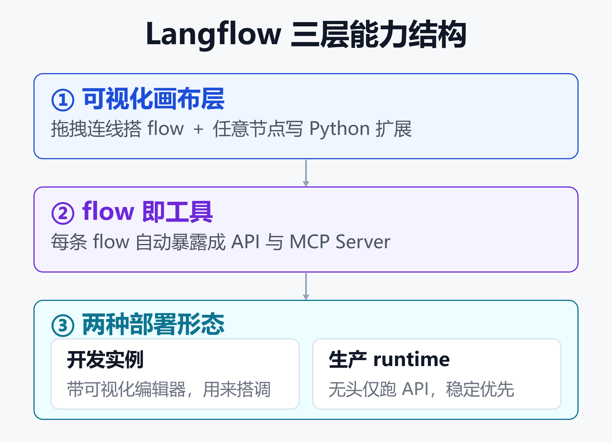

Langflow 全解析 2026：能力、应用场景与那些没人告诉你的生产与安全代价
先说一个容易被忽略的事实：一个 CVSS 9.8 的高危漏洞，曾让公网上大量 Langflow 实例被批量植入僵尸网络和挖矿木马。
而在这之前，Langflow 的故事是另一种画风：GitHub 约 15 万 star，从"两天 6000 行代码"起步，先被 DataStax 收购，又随 DataStax 被 IBM 收编进 watsonx 生态。
这两面拼在一起，才是完整的 Langflow：它能做什么、适合谁、生产部署要付出什么代价，以及安全这道坎该怎么迈过去。
一、Langflow 到底是什么
一句话：用画流程图的方式搭 AI Agent 和工作流，然后一键把它变成 API 或 MCP 工具。
它是开源的低代码可视化框架，把 LLM、提示词、向量库、记忆、工具、自定义 Python 抽象成一个个节点。你在画布上拖拽连线，定义数据怎么在这些节点间流动，就搭出了一条 flow。
这条 flow 可以是一个 RAG 问答链，也可以是一个能调工具的 Agent，还可以是多个 Agent 协作的复杂编排。
它的关键差异点在于"双模式"：既能无代码拖拽出原型，又能在任意节点里写 Python 深度扩展，接内部系统、加自定义逻辑。原型和生产用的是同一套东西。
许可证是 MIT，比 Dify、Flowise 更宽松。这意味着你可以把这个工作流引擎嵌进自己的闭源产品里，法律负担最小。
二、核心能力拆解
2.1 可视化编排 + 全代码扩展
画布是 Langflow 的门面。组件"开箱即带电"，支持所有主流 LLM 和向量数据库，工具库还在持续扩张。
但真正让它区别于纯玩具的，是每个组件背后都能落到 Python。可视化解决"快速搭起来"，代码解决"接得进真实系统"。
2.2 flow 即工具：内置 API 与 MCP Server
这是 Langflow 最有价值的一环。你搭好的每一条 flow，平台都自动给它配好 API 端点和 MCP Server。
换句话说，flow 不只是能在 playground 里跑，它天生就是一个能被外部应用、IDE、其他 Agent 调用的工具。想深入理解 MCP 这套协议，可以看MCP vs A2A：AI Agent 协议深度解析。

如上图，Langflow 的能力可以拆成三层：上层是可视化画布（拖拽 + Python 扩展），中层把每条 flow 暴露成 API 和 MCP Server，下层则分裂成"带界面的开发实例"和"无头的生产 runtime"两种部署形态。这个分层是理解它能力边界与部署取舍的关键。
2.3 RAG 与多向量检索
RAG 是 Langflow 的核心场景之一。近期的 1.11 版本引入了 NextPlaid 扩展，把 ColBERT 式的后期交互检索和 ColPali 式的视觉文档检索做成开箱即用，不用再自己写胶水代码。
想搞清楚检索背后向量库怎么选，可以参考开源向量数据库怎么选：六款主流引擎横评。
三、被 IBM 收编：一条不寻常的路径
Langflow 的资本路径直接影响一个判断：这东西能活多久、值不值得长期押注。
它最初由 Logspace 团队开源。2024 年 4 月，DataStax 收购了 Langflow，把它和自家的 Astra DB 向量库捆成一套生成式 AI 应用栈。
2025 年 2 月，IBM 宣布收购 DataStax。Langflow 随之并入 IBM watsonx，被定位成"开源原型到企业级部署之间的桥梁"。
对使用者的实际含义有两面。
正面：背靠 IBM，长期维护和企业级支持更有保障，商业化落地路径清晰。
需要留意的一面：它越来越像 IBM watsonx 生态的入口，未来功能演进可能会往 IBM 的商业版本倾斜。开源部分目前仍活跃，但值得持续观察。
四、典型应用场景
Langflow 不是万金油。它有明确的甜区。
场景一：快速原型与团队协作
需要把一个 AI 想法快速验证出来，又想让非纯后端的同事能看懂流程，可视化画布很合适。
场景二：RAG 问答与知识库
文档问答、客服知识库这类检索增强场景，是它组件最成熟的地方。如果你更关心知识库本身，也可以看用 FastGPT 搭企业知识库的能力边界梳理。
场景三：把 AI 能力封装成内部工具
借助内置 API 和 MCP Server，把一条 flow 直接变成公司内部各系统能调用的服务，省掉自己写服务层。
场景四：多 Agent 编排
搭建带条件分支、工具调用、多智能体协作的复杂流程，是它相比纯聊天机器人工具的优势区。企业级落地的更多考量见企业 AI Agent 部署实战指南。
五、生产部署的隐藏成本
demo 跑得爽，不等于生产扛得住。有几个地方是 Langflow 用户最容易低估的。
5.1 两种部署形态别搞混
官方在 Kubernetes 上明确区分两类部署：
- 开发实例：带可视化编辑器，用来搭和调 flow。
- 生产 runtime：无头（headless）后端，只跑 API，不带编辑器，追求稳定和性能。
生产环境应该跑 runtime，而不是把带编辑器的开发实例直接暴露出去——这一点和安全直接相关。
5.2 多 worker 的坑
单 worker 开发够用，但一旦上多 worker 就有陷阱：flow 的构建任务是按进程存在内存里的。
在 worker A 上发起的构建，没法从 worker B 去轮询或流式获取。要横向扩展，得配好共享的任务队列后端，否则会出现莫名其妙的任务丢失。
5.3 性能与资源
可视化在复杂链路下不总是更快。社区反馈过：Docker 更新后出现 UI 卡顿、拖拽和输入都变慢、Agent 工具调用异常。
通过 API 调用相比 playground 也有额外的网络和 HTTP 开销。官方为此专门做过内存优化和稳定性改进，侧面说明重负载多 Agent 环境下的资源管理确实是个真问题。
六、安全：最需要正视的一道坎
安全是 Langflow 绕不开的一道坎，也是最容易被使用者忽视的。
6.1 CVE-2025-3248：一个教科书级的 RCE
1.3.0 之前的版本存在一个 CVSS 9.8 的高危漏洞。问题出在 /api/v1/validate/code 这个端点。
它本意是校验用户提交的 Python 代码，用 ast 模块解析，然后用 exec 执行其中的函数定义。要命的是：这个端点未鉴权、也没沙箱。
结果就是：未授权的远程攻击者，只要发一个精心构造的 HTTP 请求，就能在服务器上执行任意代码，完全接管实例。
6.2 从漏洞到实战攻击
这不是纸面风险。安全团队观测到活跃攻击活动：攻击者利用该漏洞投递 Flodrix 僵尸网络。
后续还有 CVE-2026-33017，被用来部署门罗币挖矿木马，并且能通过复用的 SSH 密钥横向扩散，把一个暴露的实例变成入侵更大范围的跳板。
6.3 该怎么防
核心原则就一条：不要把带编辑器、无鉴权的 Langflow 实例裸奔在公网上。
- 及时升级到已修复版本（1.3.0 及以后修了 CVE-2025-3248）。
- 生产环境跑无头 runtime，关掉自动登录、开启鉴权。
- 放在网关/反向代理后面，做网络隔离和访问控制。
- 定期跟踪官方安全公告，持续打补丁。
可观测性也是安全和稳定的一部分，可以配合用 Langfuse 做 LLM 与 Agent 可观测性的实践一起看。
七、和同类工具的定位差异
把 Langflow 和几个常被拿来比较的工具放在一起，看清各自的定位差异，能帮你判断要不要选它。
| 工具 | 定位侧重 |
|---|---|
| Langflow | 可视化+全代码，MIT |
| Dify | 完整应用层平台 |
| Flowise | 最轻量聊天机器人 |
| n8n | 工作流自动化为主 |
简单说：想要最宽松许可、能深度嵌自己产品，Langflow 合适；想要开箱即用的完整应用后台，Dify 更省事；只做个嵌入式聊天机器人，Flowise 最快。
想看更细的对比维度，可以参考Dify、Coze、RAGFlow、n8n、FastGPT 五平台横评。
小结
Langflow 是一个能力扎实、路径清晰的开源可视化 AI 平台：可视化加全代码的双模式很实用，flow 即 API/MCP 工具的设计很聪明，背靠 IBM 的长期性也让人相对安心。
但它的代价同样真实：生产部署要分清开发实例和无头 runtime，多 worker 有坑，重负载下资源管理不轻松；更关键的是安全——一个未鉴权的 exec 端点就曾酿成 CVSS 9.8 的大规模入侵事件。
一句话总结：把它当作快速搭建和内部工具化的利器很好，但一旦要暴露到生产网络，就必须用对待安全关键系统的态度来部署它。
免责声明
本文基于公开资料整理，仅供技术参考，不构成任何投资、采购或安全合规建议。文中涉及的漏洞信息以官方安全公告和 CVE 数据库为准；版本特性可能随官方更新变化，请以官方文档为准。生产部署前请自行做完整的安全评估。
参考来源
- Langflow 官网 —— Low-code AI builder for agentic and RAG applications
- GitHub —— langflow-ai/langflow 项目主页
- IBM Think —— What is LangFlow?
- IBM Newsroom —— IBM to Acquire DataStax
- Business Wire —— DataStax Acquires Langflow
- Langflow Blog —— 1.11.0 Multi-Vector Retrieval with NextPlaid
- Langflow Docs —— Langflow architecture on Kubernetes
- Langflow Docs —— Deploy Langflow with multiple workers
- Langflow Docs —— Use Langflow as an MCP server
- Vulhub —— CVE-2025-3248 复现说明
- Horizon3 —— Unsafe at Any Speed: Abusing Python Exec for Unauth RCE in Langflow
- Trend Micro —— Langflow Vulnerability CVE-2025-3248 Delivers Flodrix Botnet
- Trend Micro —— From Langflow to Monero: CVE-2026-33017 Cryptominer
相关阅读
- MCP vs A2A：AI Agent 协议深度解析
- Dify、Coze、RAGFlow、n8n、FastGPT 五平台横评
- 企业 AI Agent 部署实战指南
- 用 FastGPT 搭企业知识库的能力边界梳理
- 用 Langfuse 做 LLM 与 Agent 可观测性的实践
推荐搭配装备
善其事，利其器。以下硬件能最大化你的AI体验👇
🔗 通过以上链接购买可支持本站持续运营 🙏